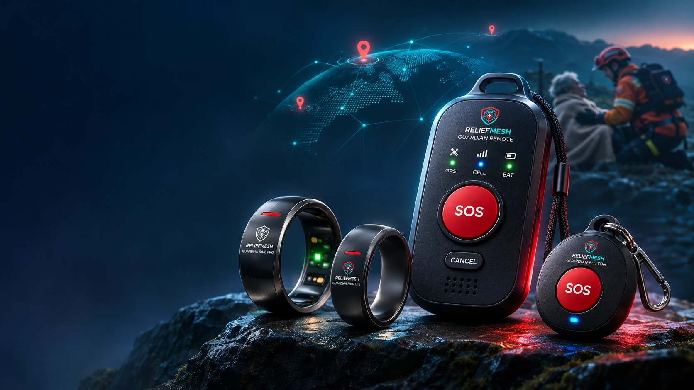
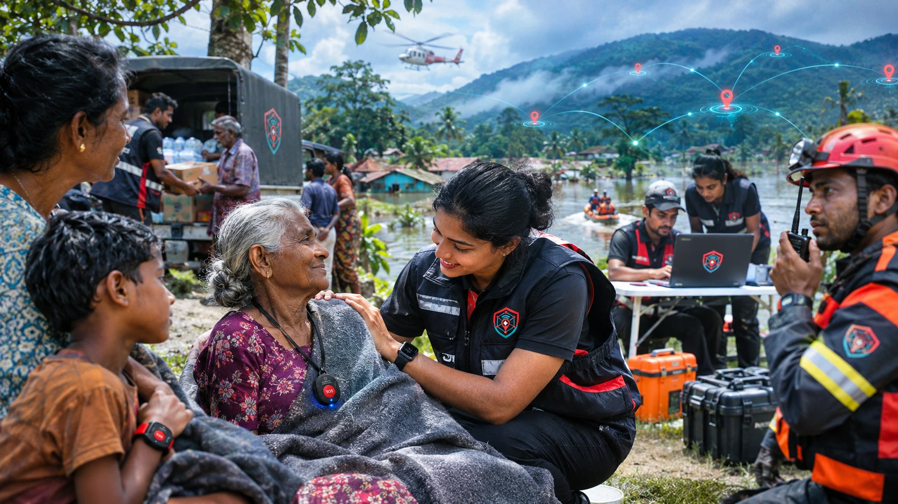

01
Report incidents
Location-aware reporting with incident details and urgency.
A connected emergency-response platform for citizens, operators, volunteers and organisations — bringing critical information and coordinated action into one shared view.
People first. Built for clarity.

Location-aware reporting with incident details and urgency.
Operator review, assignments and a shared response workflow.
Architecture prepared for future Guardian SOS integration.
ReliefMesh places community safety at the centre of emergency coordination — creating a clearer connection between the people asking for help and the teams ready to respond.
Guardian wearables extend that mission as product concepts for accessible, intentional SOS activation.

Four purpose-led device concepts designed around different needs — from everyday personal safety to advanced emergency connectivity.
Accessible emergency SOS wearable concept.
Safety with future wellness-sensing concepts.
Compact Bluetooth emergency control concept.
GPS and cellular-enabled SOS device concept.
Our proposed Guardian ring family combines broad accessibility with a higher-feature option for those who need it.
An SOS-first concept focused on cost, comfort and broad community access.
An expanded concept with wellness sensing and additional safety features.
Design vision only. Specifications and capabilities are not presented as verified production features.
Explore how a Guardian SOS concept could communicate with a coordination backend, connect incident data and inform responders.
Illustrative architecture: not a claim that every integration is currently deployed.
Behind every alert is a person. The strongest emergency technology is designed with empathy, clarity and coordination from the start.
Discover the coordination platform and explore a future where more communities have access to thoughtful emergency technology.